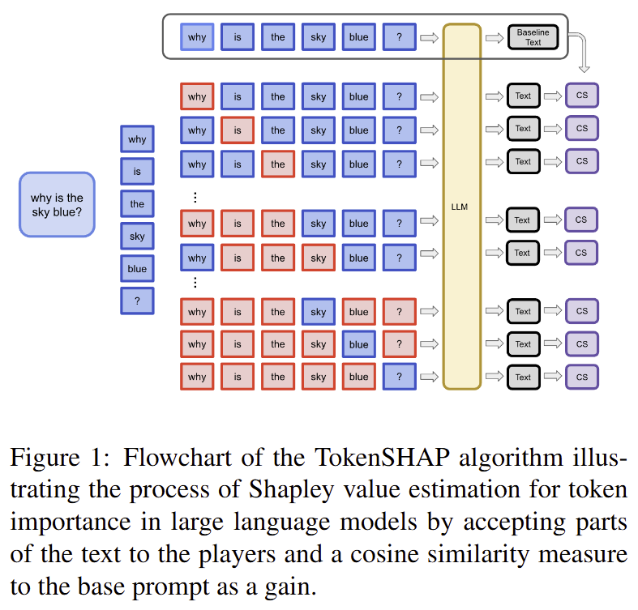
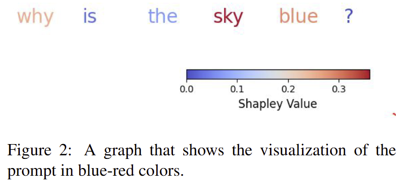

2025-3-7
TokenSHAP: Interpreting Large Language Models with Monte Carlo Shapley Value Estimation
代码：github
本文介绍了一种使用蒙特卡罗抽样方法对 token 的重要性进行评估的方法 TokenSHAP，增加了大模型的可解释性。
方法：
该方法将原 prompts 的子集输入模型得到输出并将该输出与原输出计算 cos 相似度以得到被删去的 token 的重要性。
考虑到长度为 N 的 prompts 有 \(2^N\) 个子集，计算全部过于困难，故运用蒙特卡洛抽样方法的思想，仅选取两种子集：
1.移除单个 token。2.基于特定的采样率对其他组合（不包括只移除单个 token 的组合）进行随机抽样。

代码中提供了可视化方法，可增强模型的可解释性。

局限性：
- 计算成本：尽管蒙特卡罗抽样提高了效率，但 TokenSHAP 仍然比简单的可解释性方法计算量更大，因为它需要重复使用模型进行输出。
- 对采样的敏感性：蒙特卡洛抽样的随机性带来了 token 重要性分数的变化，在不同的运行中可能会略有不同。
- 可加性假设：该方法的理论假设是，单个标记的贡献可以通过加法结合起来，但在复杂的交互和非线性动态占主导地位的情况下，这种假设并不总是准确的。
2025-3-7
http://example.com/2025/03/07/2025-3-7/